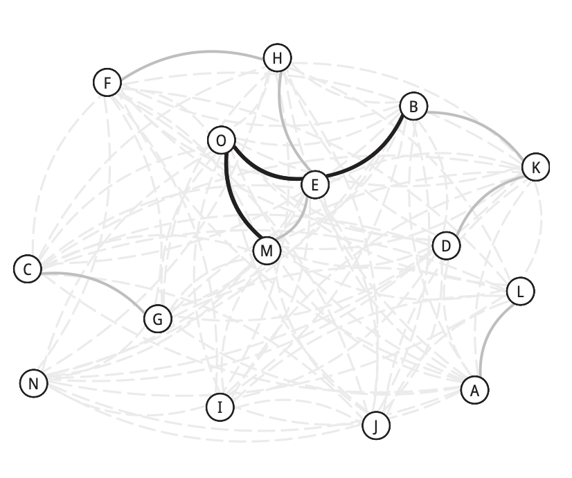

Bibliometrics Quick Notes
Dr. Stephan Gauch ![]()
What is all this?

In the legal professions, there is a concept that in German carries the wonderful name “Loseblattsammlung” (aka looseleaf binder, often as part of a subscription then called looseleaf service). You pay for the joy of receiving bundles of notes on some legal topic or issue, that you then may neatly file away in a special folder in order to be “up to date” on all the relevant facts and concerns surrounding said topic. In a way, what you are currently looking at is also some sort of a looseleaf binder, in that it aims to inform you on things. Yet, in contrast to being “all up to date all the time,” it is rather something that should get you “up to speed” in that it gives you a starting point for a subset of topics and concepts in bibliometrics. Also, there is no real service to subscribe to. Rather, these notes are a starting point of starting points.
But… why?
“Why not write a proper textbook?” you might say. And yeah, sure, thanks, great suggestion! I probably could give a number of excuses. But rather than those, I give you this. Also, I thought it would be best to have something to just jump in without prior training in order to set a basis for an inclusive discourse about the concepts and ideas discussed. Having recently screened the state of bibliometrics in use, I see a lot of contributions that would probably not qualify for publication in a bibliometric core journal. I don’t think that is a problem in itself. I also don’t subscribe to the notion that authors of such contributions are per se “incompetent” or just have to “see the light” or should be prevented from trying new things. Not necessarily (only) for moral reasons - the latent elitism should be obvious - but for pragmatic ones. There is a lot of talk about being “responsible” when working with metrics. That’s true for sure, right? Yet, it also is also quite funny in my book, since one probably would have a bit of a hard time to find vocal advocates for a) the “irresponsible” use of metrics, or, for that matter, b) “meaningless” metrics or c) measuring what is “irrelevant”. So these pleas don’t really do much on their own. Anyway! Rather than thinking of commandments, I opted for this: Providing a simple starting point to allow interested newcomers to join the party.
Who (I think) might enjoy reading this?
Well, first, foremost and obviously, anyone who wants to know what bibliometrics is about.
Obvious candidates are:
- Students not having access to an introductory bibliometrics course and want to start learning.
- Students that do have access to an introductory bibliometrics course, but struggle with getting a grip on the basic concepts and how they relate to each other.
- Practitioners and administrators planning to use bibliometrics in their work and need a starting point (sic!) on what’s what.
- Policymakers who want to engage in a discourse with the bibliometric community and connect on the level of language use, what concepts bibliometricians believe to be relevant and why they believe that.
- Anyone who wants to better understand a bibliometric study.
Where to start with the Quick Notes?
Is there a structure to the individual notes? Do they have to be read in a particular order? Yes, and no. No, you may read this in any order you see fit. Yes, starting with the basics might be a good idea, but I guess you would have figured that out on your own and would not need a cue for that. Also yes, I tend to bracket bibliometrics into the following territories and did so in the Quick Notes as well.
Evaluative bibliometrics, the territory of the vertical, where the tideous repetitiveness lives. What is “countable”, based on an argument of shared characteristics, e.g. one citation being just like any other citation, is stacked up to find out who are the “best of the best of the really very, very bestest”. For better or worse as numerous reform initiatives suggest.
Explorative bibliometrics is the territory of the horizontal. The realm of mapping and charting the old and the new or finding some path from one peculiarity to another. How do topics evolve? Who cooperates with whom? These sorts of things. The Explorative and the Evaluative are quite neighborly, since you can try to translate many horizontal phenomena into vertical signifiers of “value” or “quality”. A bibliometric mapping exercise can be both speak for “success in community building” as well as “representation of a community”. Hence, borders here are sometimes rather loosely defined. Yet, both can have rather different ideas of what is “relevant” or “adequate”.1
Both of these territories share that they work “with” databases in some way or another.
Curative bibliometrics is the territory responsible for keeping things in order. Pruning, weeding things out, naming all the things properly, etc. In practical terms: Making sure that mapping and counting can be done “adequately” and in a proper orderly fashion. Obviously, this is less working with the database but rather “on” the databases.
Finally, reflexive bibliometrics, a territory that I consider myself the most with nowadays, is a home for those who do not necessarily(!) work with databases or not necessarily(!) work on databases - usually they can do both, too - but try to understand how working with and working on databases shapes what bibliometricians do, what others do with what bibliometricians do, and what others, e.g. researchers, do when observing what other others do, e.g. funders, with things that bibliometricians do and how all of this plays together. So, inhabitants are rather interested in the idea of working on the profession of bibliometrics and performativity of bibliometrics, i.e. how measures or maps rather “produce” what they seek to “show”.
Anyway. I digress, again. Let’s move on.
How the Quick Notes are structured
The notes themselves definitely have an internal structure. All documents start with a “What is this about” section, giving a rough idea what concept the note is about. Next, you will find some sort of a situating passage. Why is that concept important in bibliometrics? Where applicable, you will find a passage on “How does this work?” giving some verbalized idea of the procedures involved.
The Quick Notes do NOT contain code. Preposterous! Where is the tutorial? Isn’t bibliometrics also a craft? Of course it is! And there might be more to come. Eventually. I guess. Anyway!
The last section contains limitations and critique towards or at least related to the concept. These are not the result of a careful screening exercise but rather me channeling the field. Last but not least: References. Another starting point. Obviously, that selection is illustrative and not exemplary.
Another aspect that structures the Quick Notes is their length. They are almost insultingly short given the glorious purpose an ambitious reader might throw at them. Needless to say: Each is a rabbit hole. A bottomless pit of sorts. Each and every one of the topics makes for a quite wonderful fetish. Consider these notes a shovel, at maximum a very tiny and short ladder. The absolute minimum that these should achieve though is getting you, dear reader, to be able to discuss these issues with those that are more versed and have already dug a deeper hole for themselves. The absolute maximum is getting you hooked on one or more of these fetishes.
That’s an awful lot of starting points and not much of a conclusion
Indeed. This is intentional and pretty much by design. These notes are supposed to leave you, dear reader, a tad unfulfilled. So it’s not an all-inclusive trip but rather a badly drawn map on a napkin to instill the recklessness of, dare I say, adventure. Also, you might have realised that the Quick Notes don’t have a DOI. This is not a coincidence! You should, for multiple reasons, not reference these notes. First of all, they are, for reasons argued above and didactic purposes, shallow, dramatically short, on the brink of being oversimplified. The aim is to have you understand the basics. So, rather than referencing these notes, I would rather have them shared.
Some final remarks: Why did you not make this a proper Wiki? Well, all of this is licensed CC-BY. Go forth and wreak havoc. Why did you not cover [insert your favourite fetish here]? Great question! Thank you! Can I contribute to this or write a Quick Note myself? Color me delighted! For the moment, I guess you might just contact me about this: stephan.gauch@hu-berlin.de.
Anyway.
Enjoy the ride.
Berlin, 18 Jul 2025
Acknowledgments
I want to thank a lot of people. First of all, the Working Group “Competence development” of the Competence Network Bibliometrics (KB), who participated in the selection of and discussion on these topics. I also would extend my thanks to Sophia Dörner, Beatrice Yefimov, and Najko Jahn, who supported the finalisation and polishing of these Quick Notes. All the remaining shortcomings that survived these scrutinous efforts are probably, no, eventually, intentional but in any case my own.
The development of these Quick Notes was partially funded by the Federal Ministry of Research, Technology and Space (BMFTR) in terms of the VaMoKo project (FKZ 16WIK2101D).
The material is free to use and re-use, licensed under the CC BY 4.0 License.
Using a “citation window” means to count the incoming citations to a contribution of a pre-defined period of time in order to prevent unfair comparison of old and new publications. After all, the old ones had more time to get cited. Makes sense in evaluation, but probably less so when the aim is to explore or map something. The difference between a) “We need to compare fairly and therefore have to control for unfair advantage of old publications!” does not play well with b) “Why cut off a part of the past of a field, when your interest is in the past of a field?”. There is, of course, a Quick Note on Citation Windows.↩︎